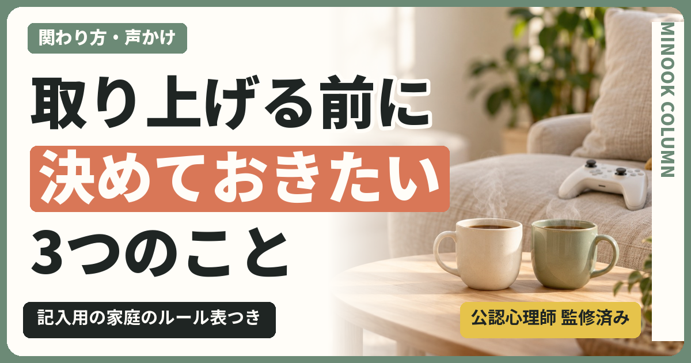

目次
この記事のポイント
- 取り上げが裏目に出やすいのは、期間・理由・戻す条件が決まらないまま行われるとき
- 取り上げるかどうかより先に、子どもと「約束の形」を決める
- 命や安全に関わる場面では、預かることをためらわず、相談先も頼る
スマホやゲームの取り上げが逆効果になりやすいのは、取り上げる期間、その理由、どうすれば戻るのかが決まらないまま行われるからです。大切なのは取り上げるかどうかではなく、子どもと一緒に「約束の形」を先に決めておくことです。
夜遅くまでスマホを触っていて、朝起きられない日が続く。声をかけても返事がなく、ついに「もう没収」と手に取る。子どもは大きな声で言い返し、部屋にこもってしまう。翌日には家族の誰かのタブレットを使っていて、親はまた叱る。こうした流れに心当たりのあるご家庭は少なくないと思います。
この記事では、取り上げが裏目に出やすい条件、スマホが逃げ場になっていないかを振り返る表、取り上げる前に確かめたい点検表、言い合いにならない声かけの言い換え、記入用の家庭のルール表、話し合いを始める手順を用意しました。
1.スマホ・ゲームの取り上げが逆効果になる3つの条件
取り上げたあとに関係がこじれるのは、子どもの反抗心が強いからでも、親の伝え方が下手だからでもありません。次の3つがそろうと、どのような家庭でも裏目に出やすくなります。
1つ目は、突然であることです。対戦の途中や、友だちとやり取りしている最中に取り上げられると、子どもにとっては友だちとの約束を破ることにもなります。怒りは、取り上げられたことより「話も聞いてもらえなかった」ことに向かいます。
2つ目は、理由が伝わっていないことです。親の側には「朝起きられない」「成績が下がった」という理由があっても、取り上げる瞬間にはそれが言葉になっていないことがよくあります。子どもには、親の機嫌で決まったように見えます。
3つ目は、戻る条件がないことです。いつ返ってくるのか、何をすれば返ってくるのかが分からないと、子どもにできることは「返して」と言い続けるか、隠れて使うかのどちらかになります。
取り上げそのものより、取り上げ方が関係を左右します。逆に言えば、この3つを先に決めておけば、預かることが必要な場面でも、話し合いの余地を残せます。
2.取り上げたあとに起きやすいこと
条件がそろわないまま取り上げると、家庭の中では次のようなことが起きやすくなります。
- 家族の端末や友だちの家など、別の場所で使うようになる
- 使っている時間が見えなくなり、かえって様子が分からなくなる
- 親子の会話が「返して」「だめ」のやり取りだけになる
- 取り上げを避けるために、困ったことがあっても親に話さなくなる
最後の点は特に気をつけたいところです。ネット上で嫌な目にあったときや、課金で困ったときに、子どもが最初に相談できる相手が親であることは大きな支えになります。取り上げが「話したら取られる」という経験になると、その窓口が閉じてしまいます。
3.スマホが「逃げ場」になっていないかを見る
使う時間が増えているとき、スマホやゲームそのものより先に見ておきたいことがあります。それは、スマホが何かのつらさから離れるための場所になっていないかということです。
授業についていけなくなった、友だちとの関係がうまくいっていない、家の中で気の休まる時間がない。こうしたつらさを抱えているとき、スマホやゲームは、いやなことを考えずにいられる数少ない場所になります。この状態で取り上げると、子どもからは逃げ場だけが奪われ、つらさはそのまま残ります。怒りが強く出るのは、そのためでもあります。
逃げ場になっているかどうかは、使っている時間の長さだけでは分かりません。次のような変化が重なっていないかを、取り上げを考える前に振り返ってみてください。
| 振り返ること | 最近の様子 |
|---|---|
| 学校や友だちの話を、前よりしなくなった | |
| 宿題やテストの話題になると、スマホに手が伸びる | |
| 休日より、学校のある日の夜に長く使っている | |
| 寝つきや朝の起きにくさが、前より目立つ | |
| 好きだったことや、家族との時間に関心が薄れている |
これは診断のための表ではありません。当てはまる項目があっても、それだけで何かが決まるわけではなく、背景にあるつらさに目を向けるきっかけとして使ってください。
背景を確かめるときは、スマホの話から入らないほうが話しやすくなります。
01
よくある言い方スマホばっかり触って、何か隠してるんじゃないの？
言い換えると最近、学校で疲れることが多い？ 話したくなったら、いつでも聞くよ。
ポイント疑いから入らず、話すかどうかは子どもに委ねる
02
よくある言い方勉強しないからスマホを取り上げるよ。
言い換えると授業で分かりにくいところがあるなら、どうしたらいいか一緒に考えたい。
ポイント罰ではなく、困りごとを一緒に片づける話にする
つらさの中身が見えてきたら、取り組む相手はスマホではなく、そのつらさのほうです。勉強のつまずきなら学習の手立てを、友だち関係なら担任の先生やスクールカウンセラーへの相談を考えます。気分の落ち込みや眠れない状態が続くようなときは、医療機関に相談してください。診断や治療は医療機関で行います。
4.スマホを取り上げる前に確かめたい点検表
取り上げを考えたときは、手に取る前に次の表を確かめてください。「いいえ」が2つ以上あるときは、取り上げる前に話し合いの時間をとるほうが、結果的に早く落ち着くことがあります。
| 点検すること | はい／いいえ | メモ |
|---|---|---|
| 取り上げる理由を、一文で子どもに説明できる | ||
| 取り上げる期間を決めている | ||
| 何をすれば戻るのかを決めている | ||
| 子どもの言い分を聞く時間をとった | ||
| 親の気持ちが落ち着いている |
最後の項目は意外と大切です。怒りが強いときに決めた約束は、厳しくなりすぎたり、あとで親の側が守れなくなったりします。その場では「あとで話そう」とだけ伝え、時間をおいてから決めても遅くありません。
5.禁止より、約束のほうが続く
取り上げや禁止は、親が一方的に決めるルールです。一方で約束は、子どもと一緒に決めるルールです。子どもが自分の言葉で決めたことのほうが、守られやすくなります。
約束にするときは、「何時まで」だけでなく、「守れなかったときにどうするか」まで決めておきます。守れなかったときの扱いが決まっていないと、そのたびに親が判断することになり、結局は取り上げと同じ「親の機嫌で決まる」形に戻ってしまいます。
また、約束は一度決めたら終わりではありません。部活が始まる、テスト期間に入るなど、生活が変われば約束も変わって当然です。見直す日を最初に決めておくと、子どもも「いまは我慢しても、話し合える日がある」と思えます。
6.言い合いにならない声かけの言い換え
同じ内容でも、言い方によって子どもの受け取り方は大きく変わります。次の言い換えは、取り上げを考えた場面でそのまま使えるものです。
01
よくある言い方もう没収。しばらく使わせないから。
言い換えると朝起きられない日が続いているのが心配なんだ。夜の使い方を一緒に決め直したい。
ポイント取り上げる理由を、責める言葉ではなく「心配」として伝える
02
よくある言い方何回言ったら分かるの。
言い換えると約束の時間を過ぎているよ。区切りがつくまで、あとどのくらいかかりそう？
ポイント過去を責めず、いまの事実と、やめどきの相談だけを伝える
03
よくある言い方返してほしければ、ちゃんとしなさい。
言い換えると今週、夜11時までに充電の場所に置けたら、週末は元の約束に戻そう。
ポイント戻す条件を、親子で同じように判断できる行動で示す
3つに共通するのは、親が困っていることを「心配」として伝えることと、戻る条件を具体的な行動で示すことです。「ちゃんとする」は人によって意味が違いますが、「夜11時までに充電の場所に置く」なら、子どもも親も同じように判断できます。
7.家庭のルール表を一緒につくる
約束は、紙やメモに残しておくと、言った・言わないの言い合いを減らせます。下の表を印刷するか、コピーして家族のメモアプリに貼り、子どもと一緒に埋めてください。
| 決めること | わが家の約束 | 見直す日 |
|---|---|---|
| 平日に使う時間帯 | ||
| 寝る前に端末を置く場所 | ||
| 約束を守れなかったときにすること | ||
| 預かることになる場面と、その期間 | ||
| 親が守ること |
以下は架空の記入例です。中学生の子どもと保護者が話し合って決めた場合を想定しています。
| 決めること | わが家の約束 | 見直す日 |
|---|---|---|
| 平日に使う時間帯 | 宿題が終わってから、夜10時半まで | 1か月後の日曜日 |
| 寝る前に端末を置く場所 | 夜11時までにリビングの充電台に置く | 1か月後の日曜日 |
| 約束を守れなかったときにすること | 次の日は夜10時までにする。続いたら一緒に約束を見直す | 守れなかった週の週末 |
| 預かることになる場面と、その期間 | 夜中に使っていた日は、次の日の夜だけ親が預かる | 1か月後の日曜日 |
| 親が守ること | 食事中は親もスマホを触らない。約束の時間内は口を出さない | 1か月後の日曜日 |
「親が守ること」の欄は省かないでください。ルールが子どもにだけ課されると、約束ではなく取り締まりに見えます。親も同じ表の中で約束することで、話し合いの席が対等になります。
8.それでも預かったほうがよい場面
約束を基本にしていても、子どもの安全を守るために、すぐに預かったほうがよい場面はあります。たとえば、知らない大人から会おうと誘われている、高額な課金が続いている、夜通しの利用で学校に行けない日が続いている、といった場面です。
そのようなときは、ためらわずに預かってください。そのうえで、理由・期間・戻す条件を、落ち着いてから言葉にして伝えることが大切です。「あなたを罰したいのではなく、守りたい」という意図が伝われば、取り上げは関係を壊すものではなくなります。
一方で、取り上げをきっかけに物を壊す、家族に手を上げるなど、家庭の中だけで対応するのが難しい状況もあります。そのときは家族だけで抱え込まず、この記事の最後にある相談先や、お住まいの地域の窓口を頼ってください。
9.話し合いを始める5つの手順
取り上げや約束の話し合いは、勢いで始めるとうまくいきにくいものです。次の手順で、落ち着いたタイミングに始めてください。
話し合いの進め方
- 時間をとる
叱った直後ではなく、週末の昼など、お互いに落ち着いている時間を選びます。
- 心配を伝える
「朝起きられないのが心配」のように、責める言葉ではなく親が困っていることを伝えます。
- 子どもの事情を聞く
友だちとの約束や、やめにくい場面があるかを聞きます。途中で反論せず、最後まで聞きます。
- 表を一緒に埋める
家庭のルール表を見ながら、子どもに案を出してもらいます。親の案は、子どもの案のあとに出します。
- 見直す日を決める
最後に、約束を見直す日を決めて表に書きます。うまくいかなくても、その日に直せば大丈夫です。
取り上げるか、取り上げないかで悩むとき、親は「甘すぎるのか」「厳しすぎるのか」と自分を責めがちです。けれど、こじれる原因の多くは親の性格ではなく、期間・理由・戻す条件が決まっていないという仕組みの側にあります。仕組みは、今夜からでも話し合って変えられます。
10.よくある質問
話し合おうとしても、子どもが応じてくれません。
約束を何度も破られます。取り上げるしかないのでしょうか。
きょうだいで約束を変えてもいいですか。
スマホを取り上げる期間は、どれくらいがいいですか？
親もついスマホを見てしまいます。
運営者
あわせて読みたい